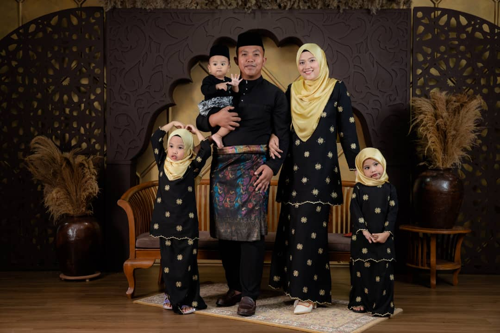

Diana Alwi
. A Wife . A Mother of 3 Child . A Working Mom . A Finance Student .
My Portfolio
About
Some text about me.
My full name is Diana binti Mohd Alwi and I loved to address myself as Diana Alwi. I was born in 19 December 1992 at Hospital Queen Elizabeth, Kota Kinabalu, Sabah. When I was 7 years old, my family, and I migrated to Selangor and I was growing up in Port Klang, Selangor for 13 years and I was moving here at Felda Ayer Hitam, Kluang, Johor following my husband after marriage in 2017.
My father’s name is Mohd Alwi bin Musa (55 years old) and my mother’s name is Paisa binti Maulud (54 years old) both was born in Sulawesi, Indonesia and they moving to Likas, Sabah at 1985 and after marriage they choose to stay in Sabah and got their citizenship in Sabah, Malaysia in 1992 during the collaboration between Tanah Melayu and Borneo. My parents own the property and currently stay at Apartment Klang villa, 42000 Port Klang, Selangor.
When I was moving from Selangor to Kluang, I resigned from my previous work as Account Assistance to fully housewife for about more than a year and I can't coop with my mental and emotional till I have my second child and I decided to go out and working. Alhamdulillah praise to Allah, I have a very supportive system which is my husband and my family in laws. I was working as a Personel Mystep (Contract Basis) at Projek Pertanian Moden, Kluang, Johor under the Ministry of Agriculture and Food Safety till today.
Furthermore, after my third child was born in Mei 2022 I decided to further my studies and go after my carrier. I loved accounting and Finance is the best choice I think I had. So, I decided to further my studies in Bachelor of Business Administration (Hons) Finance at Universiti Teknologi Mara (UiTM), Pasir Gudang, Johor.
My Skills
Computer
Sports
Sewing Cloth
Contact Me
Felda Ayer Hitam, Kluang, Johor
Phone: +060 10 254 3214
Email: 2022284206@student.uitm.edu.my

Lets get in touch. Send me a message: